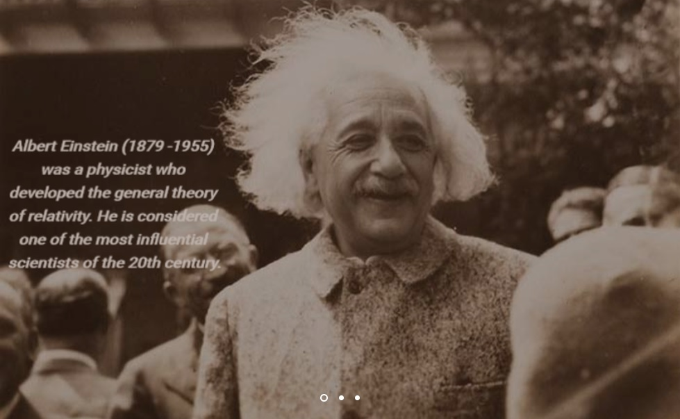

Knowledge Portal!
Welcome to Knowledge Portal

FEATURED PUBLICATIONS
Encyclopedia
“There are bars of Pear's soap and a thick book called Pear's Encyclopedia, which keeps me up day and night because it tells you everything about everything and that's all I want to know.”― Frank McCourt
Non-fiction
“Education...has produced a vast population able to read but unable to distinguish what is worth reading.”― George Macaulay Trevelyan
Fiction
“A reader lives a thousand lives before he dies... The man who never reads lives only one.”― George R.R. Martin
Meet The Team

Dominic R.
Rochie P. Gomes
Charles Dessa